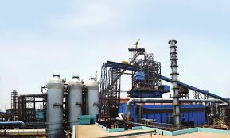

SAIL-Into the future
Modernisation and expansion
The modernization of the two private sector leaders and the program of public sector investment together raised Indian steel output from about one million tons a year in the 1940s to three million tons in 1960, then to six million tons only four years later. Pig iron output rose by an even greater margin, from 1.6 million tons in 1950 to nearly 5 million tons in 1961. Both wings of the iron and steel industry contributed to the expansion of the engineering and machinery industries envisaged in the Mahalanobis model, and in turn were stimulated by the increased demand to raise production volume and quality
Objective of Expansion Plan
- Production of ore increased,from 18 million tons to 43 million tons
- Production of ore increased,from 18 million tons to 43 million tons
- Production of ore increased,from 18 million tons to 43 million tons
- Production of ore increased,from 18 million tons to 43 million tons
- Production of ore increased,from 18 million tons to 43 million tons
- Production of ore increased,from 18 million tons to 43 million tons
Production Target
| (Million value per Annum) | ||
|---|---|---|
| Items | Base case(2006-07) Actual |
After Expansion |
| Hot metal | 14.6 | 26.2(23.5) |
| crude steel | 13.5 | 24.6(21.4) |
| saleable steel | 12.6 | 23.1(21.2) |
Indian Iron and Steel Company; IISCO-Ujjain Pipe and Foundry Co. Ltd.; Maharashtra Electrosmelt Ltd.
Capita Expenditure
The Capital Structure page of Steel Authority of India (SAIL) Ltd. presents the Authorized Capital, Issued Capital, and Paid-Up Equity Capital of the company over the period.
| Year | Total(Rs/Crore) |
|---|---|
| 2007-08 | 2180 |
| 2009-10 | 6730 |
| 2010-11 | 5209 |
| 2011-2012 | 7642 |
Home | Steel Links | FAQ | Sitemap